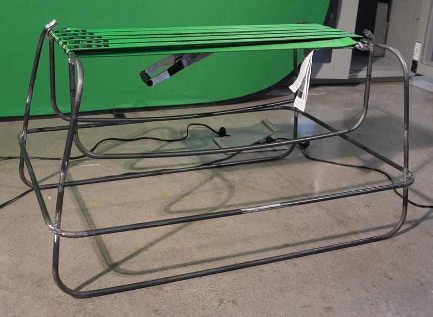
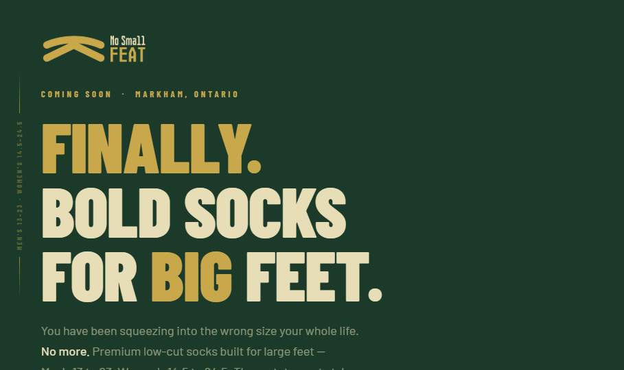

Design flow 01
Mila
No screws. No glue. Just geometry and a little spite.
WHAT IT ACTUALLY DOES FOR YOUNothing to loosen, no tiny Allen key lost under the couch, and it builds and comes apart without tools.
Ten projects, eleven years, zero products broken under me (so far). Every piece below does something useful for an actual human, and I'll tell you exactly what.

A stool for two that stacks out of the way. Metal rod frame, ratchet-strap seat, all stuff you can buy at a hardware store.
No screws. No glue. Just geometry and a little spite.

Socks for big feet (US 13–23). My people.
From a painting of fish in 2015 to furniture I personally stress-tested in 2026. Drag the strip, or use the arrows.
Marks that read on a coffee cup and on a billboard, so nobody pays for a second logo. Plus t-shirts, because everyone wants to wear a joke.
Real businesses in the works. Password required. If you don't have it, act natural and keep scrolling.